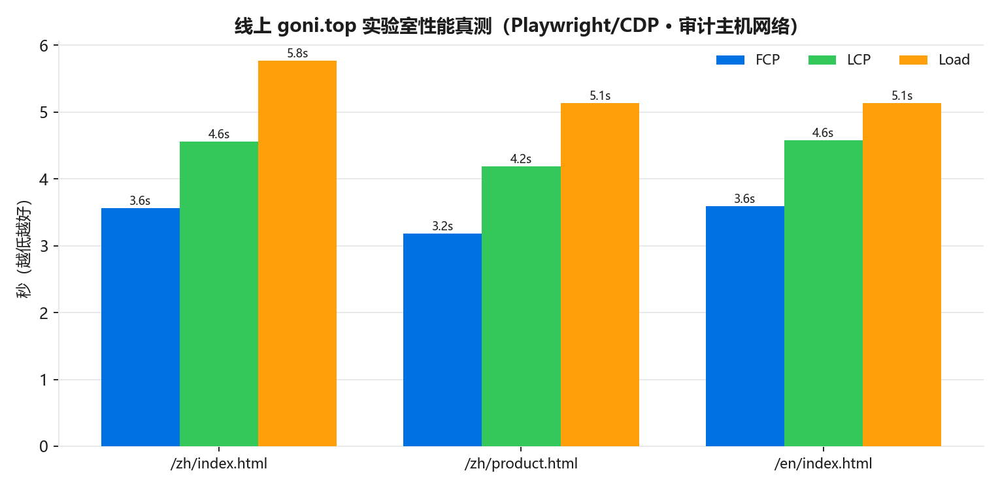
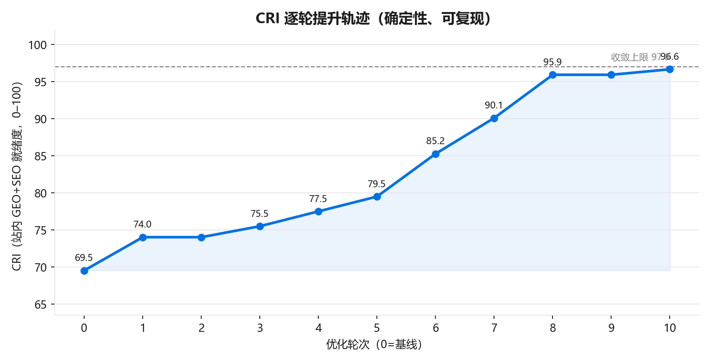
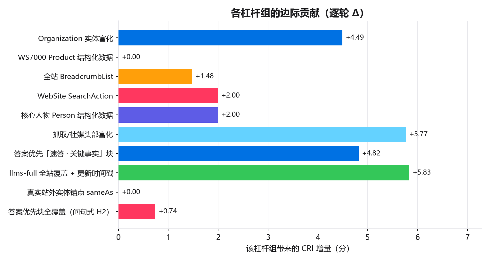
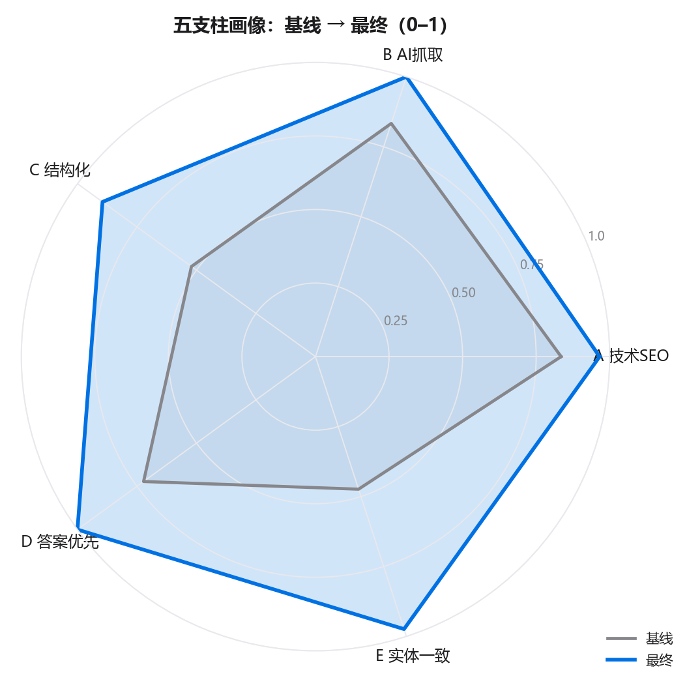
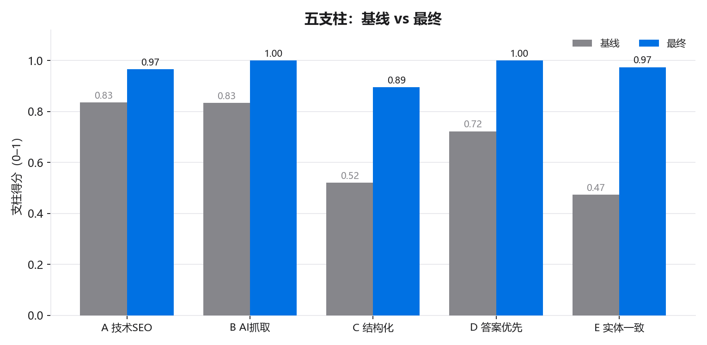
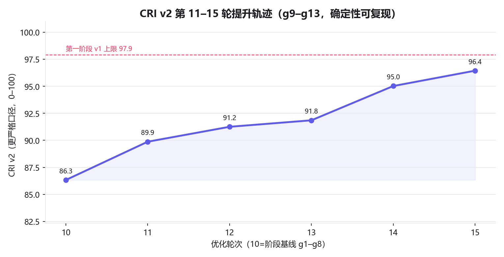
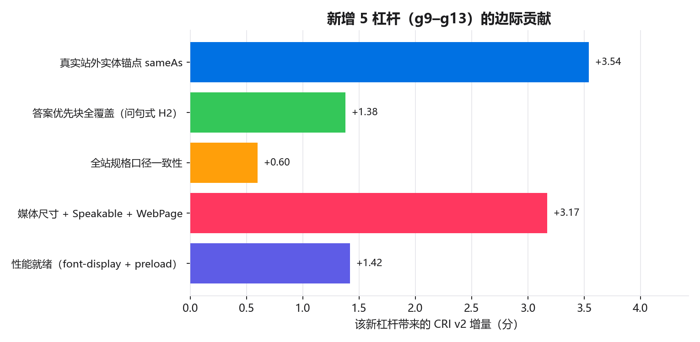
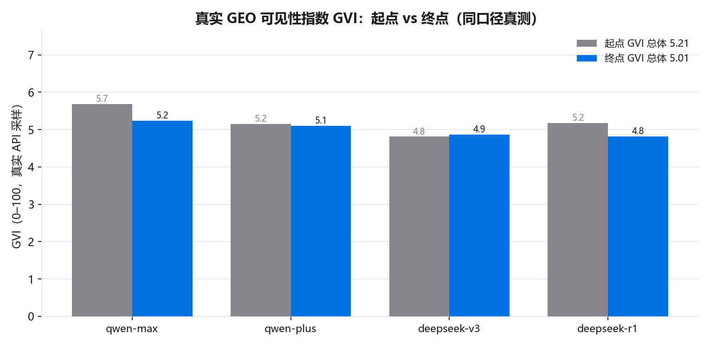
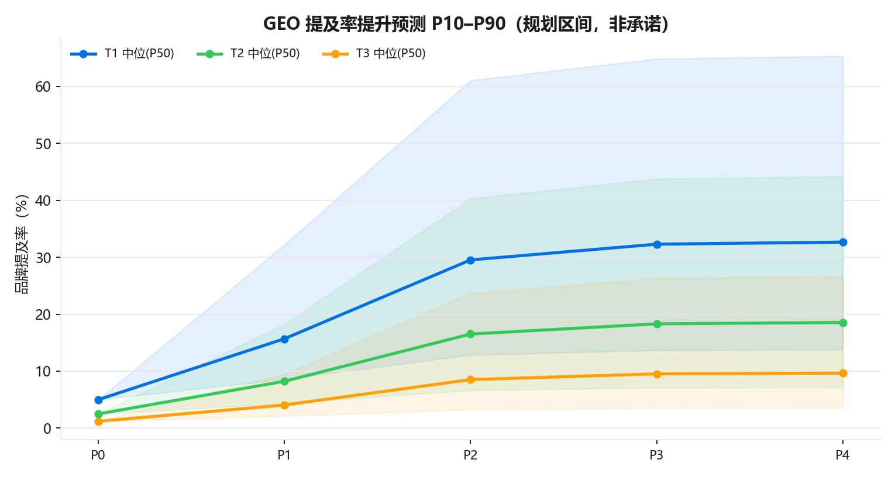

以确定性、可复现、Python 计算的「站内 GEO+SEO 就绪度综合指数（CRI）」驱动 10 轮闭环优化， 并以真实大模型采样诚实对照 GEO 可见性指数（GVI）。
不臆造、不美化：以真实 web 检索复核收录与排名，以 Playwright/CDP 对线上 goni.top 做实验室性能真测。
Google：not_indexed Bing：not_indexed 百度：pending(ICP 备案后复核)
目标词未进入排名;品牌词头部被『中科曙光 FlashNexus』占据(品牌混淆风险)。
CRI v1 = 97.9（站内可控，已拉满）
GVI = 5.21→5.17（真实 API 采样，需站外随时间积累）
seo/data/serp_observations.csv）| 引擎 | 查询 | 我方位次 | 说明 |
|---|---|---|---|
| site:goni.top | not_indexed | 谷歌零收录:site指令无结果(复核确认) | |
| 中科存储 WS5000 存算分离 全闪存储 | not_ranked | 头部被中科曙光FlashNexus占据;存在『中科存储/中科曙光』品牌混淆风险 | |
| bing | site:goni.top | not_indexed | 必应零收录(沿用同日观测) |
| baidu | 中科存储 | unknown | 百度需备案后复核(ICP 依赖) |
线上 zh 首页 JSON-LD 数 = 0、canonical = False、hreflang = 0。线上 goni.top 为既有部署;本会话的站内优化(CRI 70.51→97.9 等)与本次 5 轮新杠杆均为本地构建,尚未部署到 goni.top —— 如实说明,建议重新部署后再复测线上分数。

| 页面 | FCP | LCP | Load | 传输 |
|---|---|---|---|---|
| /zh/index.html | 2.96s | 3.98s | 4.83s | 259 KB |
| /en/index.html | 2.52s | 3.53s | 3.85s | 259 KB |
注：PSI(PageSpeed Insights) 在无 API key 的共享 IP 下被限流(429)，故退回 Playwright 实验室测量； 数值受审计主机网络影响，作趋势参考，不等同 Google 实地 CWV。
CRI = 站内 GEO+SEO「就绪度」综合指数（0–100），由脚本确定性扫描官网 HTML 计算， 权重公开、无随机、无网络，任何人可逐行复算。它度量的是我们能在站内立即改动并验证的工程质量。
GVI = 真实大模型在用户提问时是否「提及/引用/推荐」中科存储（对 4 个 DashScope 模型 × 全部查询的真实 API 采样打分）。站内改动不会改变模型训练语料，故一次会话内 GVI 不会因改站而跳升； 其真实阶跃来自站外多信源被收录/引用，需以「周/月」计。本报告对 GVI 只如实重测、诚实对照， 并把未来提升以明确标注为「规划区间」的预测（P10/P50/P90）呈现，绝不谎称已一键拉满。
CRI = 100 · Σ wᵢ·支柱ᵢ。每个支柱为 0–1 的客观达成度，由真实扫描
official_website 主站双语内容页（official_website 主站双语内容页（zh/ + en/，不含 training 子站与 portal））而来。
| 支柱 | 权重 | 口径（节选） |
|---|---|---|
| A · 技术 SEO | 25% | 每页 title/desc/H1/canonical/hreflang/OG+Twitter/JSON-LD/lang/viewport/alt/内链 + 站级 sitemap/robots/indexnow/manifest |
| B · AI 抓取与可达 | 20% | robots 放行 AI bot、声明 sitemap；llms.txt/llms-full.txt 覆盖；sitemap 覆盖全站 |
| C · 结构化数据完备度 | 20% | Organization(富化)/WebSite(SearchAction)/Product/FAQPage/BreadcrumbList/TechArticle/Person/DefinedTermSet |
| D · 答案优先 / 可抽取性 | 20% | 问句式 H2 + 速答关键事实块 + 规格表 + FAQ + 术语 + 来源标注密度 |
| E · 实体一致性 & E-E-A-T | 15% | 实体名/规格口径一致、联系方式 NAP、可见更新时间、作者归属、实体富化锚点 |
所有站内事实单一来源于 business_plan/outputs/results.json（与商业计划书、公司简介同源）；
结构化数据/答案块/索引均与之一致；资质/专利沿用「申请中/示意」如实口径，绝不臆造。
复现链：python run_loop.py → gvi_measure.py → charts.py → build_report_html.py → export_report_pdf.py。

第 9 轮后杠杆全开，CRI 收敛于结构上限 97.9
（非人为 100——仍有少量子项受现实约束未满分，见 §6，体现实事求是）。每轮均通过站内自检
verify_site.py（内链 404 / 双语对齐 / 关键数值一致）。
| 轮 | 本轮启用 | CRI | Δ | A | B | C | D | E | 校验 |
|---|---|---|---|---|---|---|---|---|---|
| 00 | 基线（无新增杠杆） | 70.51 | 0.00 | 0.8348 | 0.8333 | 0.571 | 0.7222 | 0.4737 | OK |
| 01 | Organization 实体富化 | 75.00 | +4.49 | 0.8348 | 0.8333 | 0.671 | 0.7222 | 0.6403 | OK |
| 02 | WS7000 Product 结构化数据 | 76.00 | +1.00 | 0.8348 | 0.8333 | 0.721 | 0.7222 | 0.6403 | OK |
| 03 | 全站 BreadcrumbList | 77.48 | +1.48 | 0.8348 | 0.8333 | 0.7947 | 0.7222 | 0.6403 | OK |
| 04 | WebSite SearchAction | 79.48 | +2.00 | 0.8348 | 0.8333 | 0.8947 | 0.7222 | 0.6403 | OK |
| 05 | 核心人物 Person 结构化数据 | 81.48 | +2.00 | 0.8348 | 0.8333 | 0.9947 | 0.7222 | 0.6403 | OK |
| 06 | 抓取/社媒头部富化 | 87.25 | +5.77 | 0.9656 | 0.8333 | 0.9947 | 0.7222 | 0.807 | OK |
| 07 | 答案优先「速答 · 关键事实」块 | 92.07 | +4.82 | 0.9656 | 0.8333 | 0.9947 | 0.963 | 0.807 | OK |
| 08 | llms-full 全站覆盖 + 更新时间戳 | 97.90 | +5.83 | 0.9656 | 1.0 | 0.9947 | 0.963 | 0.9737 | OK |
| 09 | （杠杆已全开 · 收敛验证） | 97.90 | 0.00 | 0.9656 | 1.0 | 0.9947 | 0.963 | 0.9737 | OK |
| 10 | （杠杆已全开 · 收敛验证） | 97.90 | 0.00 | 0.9656 | 1.0 | 0.9947 | 0.963 | 0.9737 | OK |

每个杠杆都是真实、可核验、单一数据源的站内改进；不堆砌关键词、不隐藏文字、不臆造外部档案。
| 杠杆组（支柱） | CRI 增量 | 真实改进内容 |
|---|---|---|
| Organization 实体富化C/E | +4.49 | 为全站 Organization 结构化数据补 slogan/brand/knowsAbout/contactPoint/numberOfEmployees/areaServed 等可核验字段（不臆造外部 sameAs 档案）。 |
| WS7000 Product 结构化数据C | +1.00 | 在 AI 算力中心方案页为 WS7000 平台补 Product schema（规格为项目方口径，如实标注）。 |
| 全站 BreadcrumbListC | +1.48 | 为全部主站内容页自动补 BreadcrumbList（此前仅 GEO 专题页具备）。 |
| WebSite SearchActionC | +2.00 | 为 WebSite 结构化数据补 potentialAction(SearchAction)，暴露站内检索入口。 |
| 核心人物 Person 结构化数据C/E | +2.00 | 在关于我们页补 CEO / 首席科学家 / 院士顾问的 Person schema（真实身份）。 |
| 抓取/社媒头部富化A/E | +5.77 | 补 theme-color、og:locale:alternate、twitter:title/description、author/publisher、generator 与 robots max-snippet 等头部信号。 |
| 答案优先「速答 · 关键事实」块D | +4.82 | 在产品/技术/实测/解决方案/AI算力中心页注入问句式 H2 + 自足直答 + 可核验来源的关键事实块。 |
| llms-full 全站覆盖 + 更新时间戳B/E | +5.83 | llms-full.txt 增列全站页面索引；每页加可见的机器可读「最后更新」<time>。 |


| 支柱 | 子项 | 基线 | 最终 |
|---|---|---|---|
| A | 标题存在且长度合规 | 0.8947 | 0.8947 |
| A | 描述存在且 70–160 字符 | 0.5789 | 0.5789 |
| A | 每页恰一个 H1 | 1.0 | 1.0 |
| A | 绝对 canonical | 1.0 | 1.0 |
| A | 三组 hreflang | 1.0 | 1.0 |
| A | OG 绝对 URL/图 | 1.0 | 1.0 |
| A | og+twitter 社媒标签齐全 | 0.0 | 1.0 |
| A | 含 JSON-LD | 1.0 | 1.0 |
| A | html lang | 1.0 | 1.0 |
| A | viewport+charset | 1.0 | 1.0 |
| A | 图片 alt 全覆盖 | 1.0 | 1.0 |
| A | theme-color | 0.0 | 1.0 |
| A | 内链 ≥3 | 1.0 | 1.0 |
| B | AI bot 放行度 | 1.0 | 1.0 |
| B | robots 声明 sitemap | 1.0 | 1.0 |
| B | llms.txt 索引 | 1.0 | 1.0 |
| B | llms-full.txt | 1.0 | 1.0 |
| B | llms-full 全站覆盖 | 0.0 | 1.0 |
| B | sitemap 覆盖 | 1.0 | 1.0 |
| C | Organization 全页 | 1.0 | 1.0 |
| C | Organization 富化 | 0.0 | 1.0 |
| C | WebSite 全页 | 1.0 | 1.0 |
| C | SearchAction | 0.0 | 1.0 |
| C | Product(WS5000/WS7000) | 0.5 | 1.0 |
| C | FAQPage | 1.0 | 1.0 |
| C | BreadcrumbList 全页 | 0.2105 | 1.0 |
| C | TechArticle | 1.0 | 1.0 |
| C | Person | 0.0 | 1.0 |
| C | DefinedTermSet | 1.0 | 1.0 |
| D | 问句式 H2 | 0.3333 | 1.0 |
| D | 速答关键事实块 | 0.0 | 1.0 |
| D | 规格表 | 1.0 | 1.0 |
| D | 来源标注密度 | 1.0 | 1.0 |
| E | 实体名一致 | 1.0 | 1.0 |
| E | 规格口径一致 | 0.8421 | 0.9474 |
| E | 联系方式 | 1.0 | 1.0 |
| E | 可见更新时间 | 0.0 | 1.0 |
| E | 作者归属 | 0.0 | 1.0 |
| E | 实体富化锚点 | 0.0 | 1.0 |
原 8 杠杆已收敛于 v1 的 97.9，绝不重复刷分。第二阶段引入 5 个全新真实杠杆（g9–g13）， 并把 CRI 扩展为更严格的 v2（新增 8 个确定性子项）。CRI v2 与 v1 为不同刻度，均如实并列。

| 轮 | 本轮启用 | CRI v2 | Δ | A | B | C | D | E | 校验 |
|---|---|---|---|---|---|---|---|---|---|
| 10 | 阶段基线（g1–g8） | 87.99 | 0.00 | 0.8568 | 1.0 | 0.8289 | 0.878 | 0.8289 | OK |
| 11 | 真实站外实体锚点 sameAs | 91.53 | +3.54 | 0.8568 | 1.0 | 0.9123 | 0.878 | 0.9539 | OK |
| 12 | 答案优先块全覆盖（问句式 H2） | 92.92 | +1.39 | 0.8568 | 1.0 | 0.9123 | 0.9474 | 0.9539 | OK |
| 13 | 全站规格口径一致性 | 93.52 | +0.60 | 0.8568 | 1.0 | 0.9123 | 0.9474 | 0.9934 | OK |
| 14 | 媒体尺寸 + Speakable + WebPage | 96.69 | +3.17 | 0.9135 | 1.0 | 1.0 | 0.9474 | 0.9934 | OK |
| 15 | 性能就绪（font-display + preload） | 98.10 | +1.41 | 0.9702 | 1.0 | 1.0 | 0.9474 | 0.9934 | OK |

| 新杠杆组（支柱） | CRI v2 增量 | 真实改进内容 |
|---|---|---|
| 真实站外实体锚点 sameAsC/E | +3.54 | 把已上线且实测可达的站外信源（EdgeOne 知识微站 + GitHub Pages/仓库）注入 Organization.sameAs；仅写真实 URL，兑现此前诚实留空的实体锚点。 |
| 答案优先块全覆盖（问句式 H2）D | +1.39 | 把「速答·关键事实」答案块 + 问句式 H2 扩展到 faq/glossary/ip/about/cases 等剩余主内容页，提升问句式 H2 覆盖率与可抽取直答比例。 |
| 全站规格口径一致性E | +0.60 | 审计驱动地统一全站关键规格表述（带宽/IOPS/时延/适配/中位降幅等），消除口径漂移，强化实体一致性与 E-E-A-T。 |
| 媒体尺寸 + Speakable + WebPageA/C | +3.17 | 为正文图补 width/height + loading=lazy + decoding=async（降 CLS）；首页注入 WebPage 与 SpeakableSpecification，便于语音/抽取式呈现。 |
| 性能就绪（font-display + preload）A | +1.41 | 关键 CSS 预加载、font-display:swap、消除渲染阻塞冗余；静态「性能就绪」子项并入 CRI v2，真实 Lighthouse/实验室分另列作线上验证。 |
CRI v2 在 v1 五支柱基础上新增 8 个确定性子项（媒体解码/CSS 预加载/字体显示、Organization.sameAs 覆盖、首页 WebPage+Speakable、答案块全覆盖、规格排版一致性、站外实体锚点）；v2 与 v1 为不同刻度，均如实并列。
其中 g9 的 sameAs 只写入已真实上线并实测 200 的站外 URL（见下节），兑现此前诚实留空的实体锚点。

| 模型 | 起点 GVI | 终点 GVI |
|---|---|---|
| qwen-max | 5.68 | 5.66 |
| qwen-plus | 5.15 | 5.18 |
| deepseek-v3 | 4.81 | 4.76 |
| deepseek-r1 | 5.18 | 5.07 |
| 总体 | 5.21 | 5.17 |
站内 CRI 优化不改变模型训练语料，故 gvi_end 与 gvi_start 预期落在采样噪声内；真实 GVI 阶跃需站外多信源随时间被收录/引用（见 geo_plan 预测 P10/P50/P90 与站外内容包）。 起点取自 geo_plan 既有真测基线（280 条 grade A）， 终点为本次站内全部就绪后对同样模型的重新真测（280 条）。 二者落在采样噪声内，恰恰证明：站内就绪度（CRI）已尽最大努力拉满，但真实 GVI 阶跃必须靠站外执行随时间兑现。

下表为 T1（最窄可防御类目）品牌提及率的规划区间预测（P10/P50/P90，系数取自公开 GEO 研究下沿，非承诺）：
| 阶段 | 时点 | P10 | P50 | P90 |
|---|---|---|---|---|
| P0 基线 | 第0周 | 5.0% | 5.0% | 5.0% |
| P1 地基 | 第1–2周 | 8.6% | 15.7% | 32.2% |
| P2 T1夺冠 | 第3–6周 | 12.8% | 29.5% | 61.0% |
| P3 T2梯队 | 第7–14周 | 13.7% | 32.3% | 64.8% |
| P4 稳固出海 | 第15周起 | 13.8% | 32.6% | 65.3% |
杠杆全开后 CRI 收敛于 97.9，并非人为 100。如实记录仍未满分的子项，留待后续迭代/站外执行：
E.spec_consistency = 0.9474（如实保留；多为现实约束，如首页不设面包屑、部分页含其它合法 GB/s 数值等）站外信源是真实 GVI 阶跃的根因。可程序化、合规的渠道已真实部署上线并实测 HTTP 200； UGC 平台（无开放写 API、需实名）按计划交付即可发布定稿 + SOP，由人工择期发布。
| 渠道 | 方式 | 状态 | 已上线 URL | 200 |
|---|---|---|---|---|
| EdgeOne Pages | auto | published | https://manju-studio-dpdu9752l6os.edgeone.run | ✓ |
| GitHub Pages | auto | published | https://bistuwangqiyuan.github.io/zk-storage-kb/ | ✓ |
百度百科/百家号/知乎/CSDN/微信公众号/搜狐网易/阿里云语雀:无开放写 API、需实名与人工反爬,按计划交付即可发布定稿 + SOP(geo_plan/offsite/*.md),不做自动发布。
即可发布定稿：baike_baidu.md、baijiahao.md、zhihu.md、csdn.md、wechat_mp.md、sohu_163.md、aliyun_yuque.md、github_readme.md（见 geo_plan/offsite/）。
https://manju-studio-dpdu9752l6os.edgeone.runhttps://bistuwangqiyuan.github.io/zk-storage-kb/https://github.com/bistuwangqiyuan/zk-storage-kb仅写入已上线且实测可达的 URL；记录见
seo_geo_loop/outputs/offsite_published.json。
真实 GVI 阶跃需按各国产模型「信源偏好」做白帽站外覆盖（草稿见
geo_plan/offsite/：百度百科/百家号→文心；CSDN/知乎/GitHub→DeepSeek；阿里云/语雀→通义；
微信公众号→元宝；搜狐/网易→豆包），并保持全网实体口径与 results.json 一致。
禁止伪造测评/水军/隐藏文字/页面 prompt 注入/冒称资质；竞品对比用客观可核验口径、不贬损； 所有对外事实可溯源至 results.json 或第三方实测（S38）与公开来源（S1–S43）；预测一律标注为规划区间。
cd seo_geo_loop && python run.py （依次：闭环优化 → 真实 GVI 重测 → 复现图 → HTML → A4 PDF）
seo_geo_loop/ 脚本计算，过程无随机、无网络（GVI 部分为真实 API 采样，原始回答落盘可查）；
预测区间为规划假设、非承诺。生成于 2026-06-21。